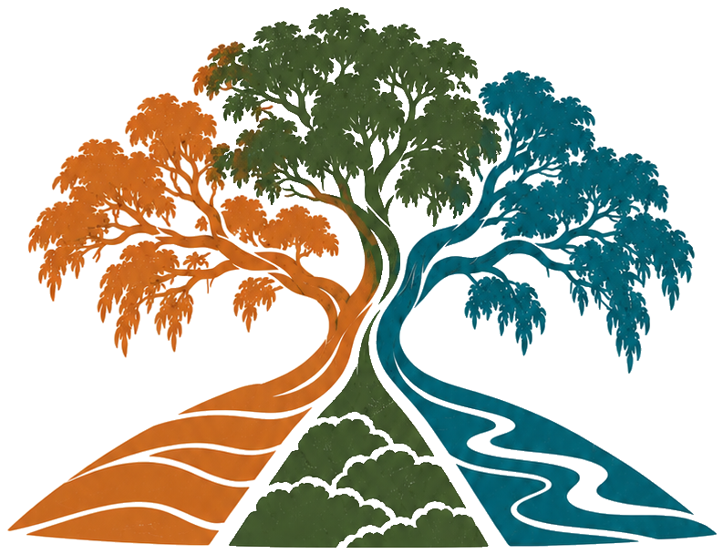
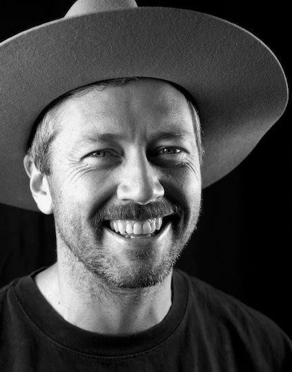
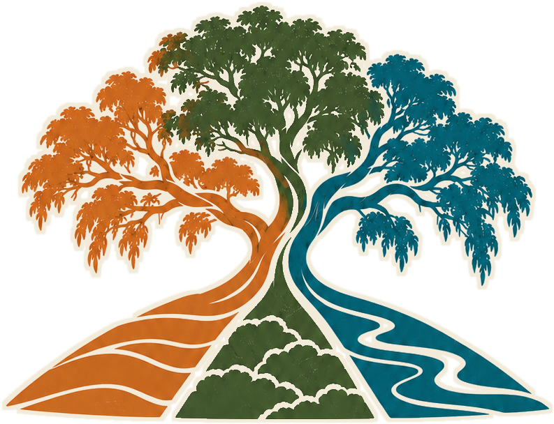

CULTIVATE NATURENature in Australia runs on goodwill, and goodwill is running out. We help the people and places doing the work put a business underneath it, so it can stand on its own and last.
Build your plan, freeAnswer ten questions, walk away with a brief for your nature venture.
Put simply: we help nature make money.
We help nature ventures become profitable and sustainable, and we help businesses put real nature programs to work. We get in, and we share the risk and the reward.
We are your concierge into nature. You choose the areas you work in with us, the tech and platforms, the marketing, the giving, the products, all from budgets you already spend, and we design and run the programs inside them.
Wildlife parks, nature attractions and the ventures built on love. We advise, we bring the business model, the partners and the visitors, and when a venture is changing hands we run the due diligence so whoever takes it on knows exactly what they are taking on.
When a much loved block or property needs a way forward, we transition ownership for longevity and purpose, and the land keeps its people and its future.
We are not consultants watching from the sidelines. We get in, carry risk alongside the venture, and win only when it does.
We put business models underneath the operations, so every donation and sponsorship funds the future instead of the power bill. We do not run charities and we never compete with them. We make their work go further.
When a founder needs a way forward, we transition ownership for longevity and purpose. We have spent a decade doing it for farms, and the nature sector needs it just as badly.
We run lean with the newest tools and ways of working, so the work costs less and moves faster, and more of every dollar reaches the ground.
The same strengths sit behind every venture, and we bring them to any company that wants to work with nature.
The apps, platforms and tools a nature program needs to run.
Carrying a real nature story to the people who should hear it.
A real wildlife partner, with the impact measured and shown.
Commercial programs that are good for nature and good for business.
Experiences and places that bring people to nature and fund it.
Making land work for nature, and handing ownership on well.

Sam has spent twenty years making the ventures people love stand on their own, across farming, conservation and technology. He knows what it takes to get nature businesses on track, and he leads a team that gets in, shares the risk, and stays for the long run.

Partner with us to cultivate nature.
If you run a nature venture that deserves a future, or a business that wants a real way into nature instead of a borrowed story, we would love to talk.
Talk to Sam Marwood